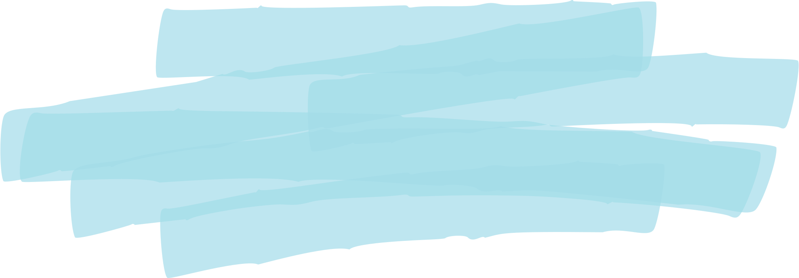
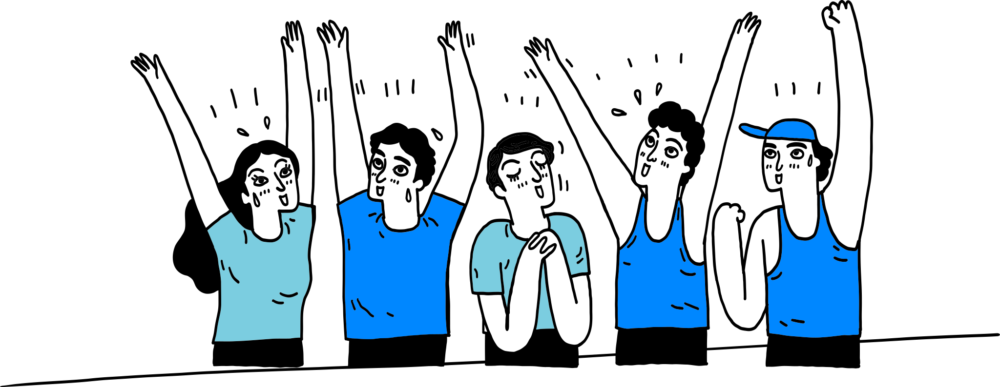
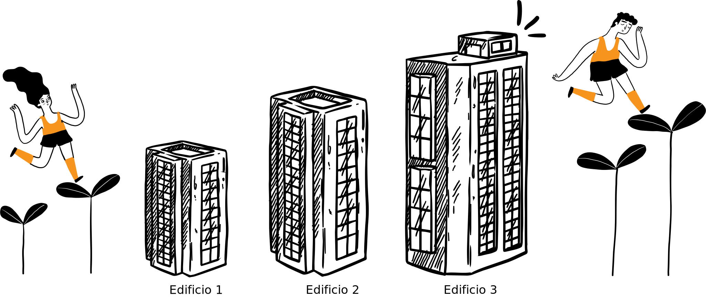
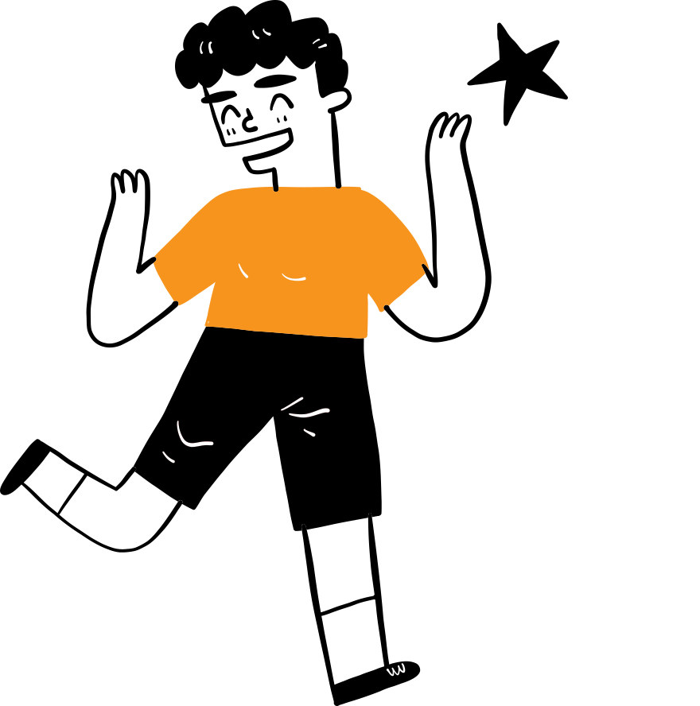
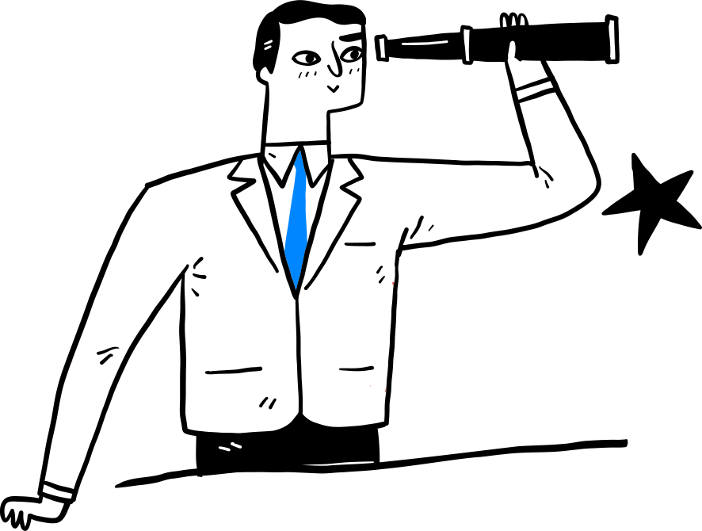
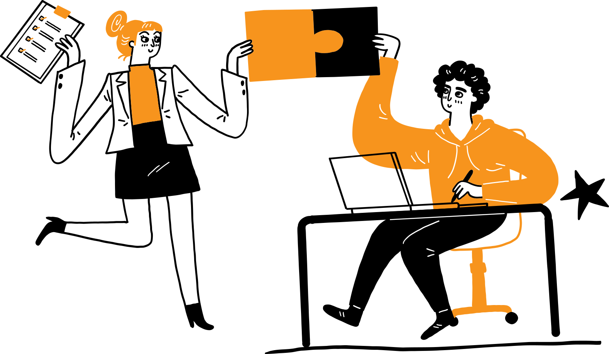
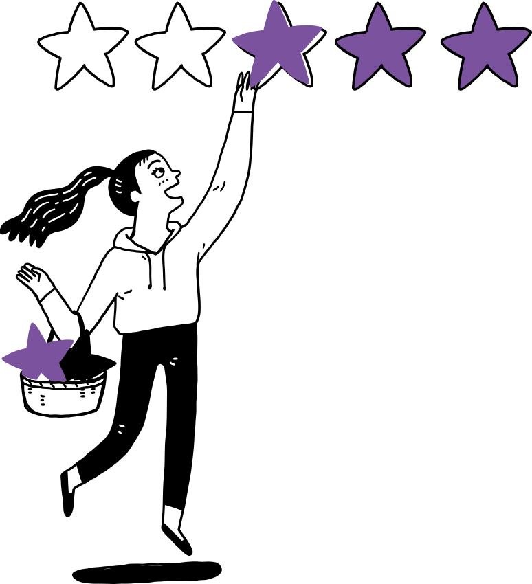

Emprendedores

¿Cómo emprender?

Edificio 1: En el primer
edificio, explorarás tu idea emprendedora realizando una investigación exhaustiva del problema, del
cliente y del entorno. Además, desarrollarás tecnológicamente tu solución hasta alcanzar una madurez
TRL 4, asegurando que la idea sea viable y prometedora a través de las siguientes fases:
| Idea: Aquí, definirás el corazón de tu emprendimiento. Profundizarás en tu idea original, la refinarás y la alinearás con las necesidades reales del mercado. | Prueba: Esta fase se trata de validar tu idea. Ponerla a prueba frente a potenciales clientes te ayudará a identificar y corregir falencias, afinando tu propuesta de valor. |
+500
ideas validadas desde
2013

Edificio 2: En este edificio,
tu emprendimiento comenzará a generar sus primeras ventas, centrando esfuerzos en perfecionar un
producto mínimo viable. Además, definirás y prepararás tus planes de mercadeo, operaciones y finanzas
para una estructura empresarial sólida y lista para crecer a través de las siguientes fases:
| Consolida: Con una ides validada, es momento de fortalecer tu modelo de negocio. Aquí se desarrollan estrategias sólidas y se construyen los fundamentos operativos de la empresa. | Avanza: Esta etapa es el preludio al lanzamiento. Finalizarás tu prototipo o producto mínimo viable y prepararás el terreno para una entrada exitosa al mercado. |

+300mLLs
en ventas
Edificio 3: Este edificio marca
la transición de tu emprendimiento hacia un negocio formal y escalable. Estarás listo para registrar tu
empresa en la Cámara de Comercio y tendrás un equipo ejecutivo capaz de implementar estrategias de
crecimiento y de gestionar inversiones para el escalamiento del negocio a través de las siguientes
fases:
| Negocia: Aquí se enfoca en estrategias comerciales y financieras. Buscarás acuerdos con socios estratégicos, inversores y entenderás mejor el panorama competitivo. | Crece: La culminación del viaje emprendedor. Implementarás estrategias de crecimiento, explorarás nuevos mercados y escalarás tu emprendimiento hacia el éxito sostenido. |

200
Empresas sólidas constituidas legalmente
Convocatoria para emprendedores
Si tienes la visión de iniciar un proyecto disruptivo, innovaTE te abre las puertas. Para unirte a
nuestros emprendedores, inicia tu proceso inscribiéndote en nuestras convocatorias semestrales. Prepárate
para cumplir con los requisitos y dar el primer paso hacia la realización de tu idea emprendedora
con nosotros.
Requisitos 2024:
|
1.
Una idea de proyecto
(un proyecto por resolver) |
2.
Un equipo con mínimo dos integrantes
|
3.
Diligenciar el diágnostico innovaTE
|

... y prepárate para nuestra primera entrevista, a la que te invitaremos vía correo.
Pre-inscribeTE ahora